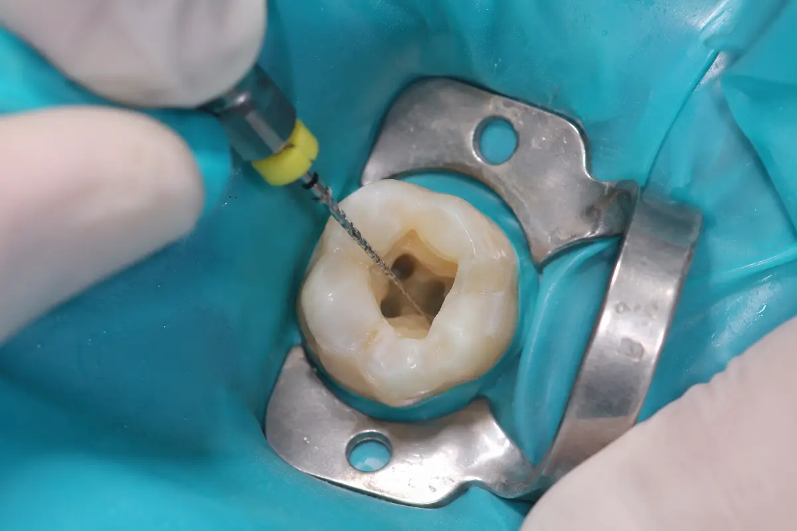
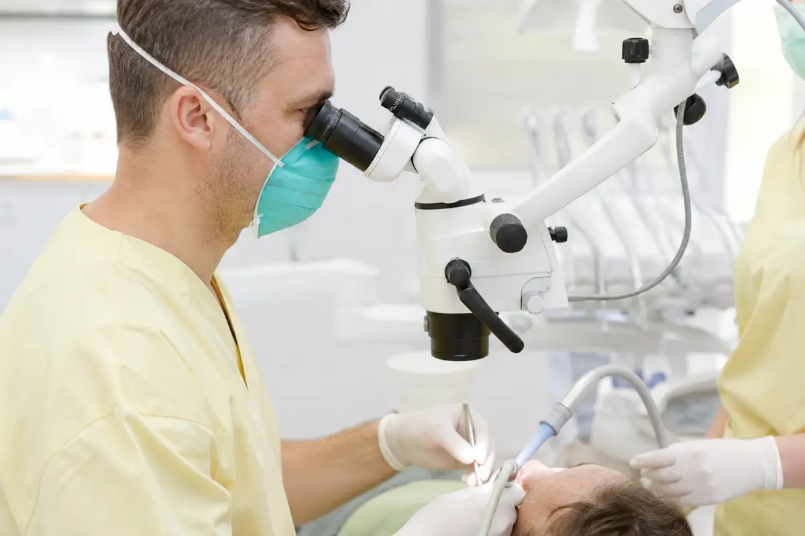
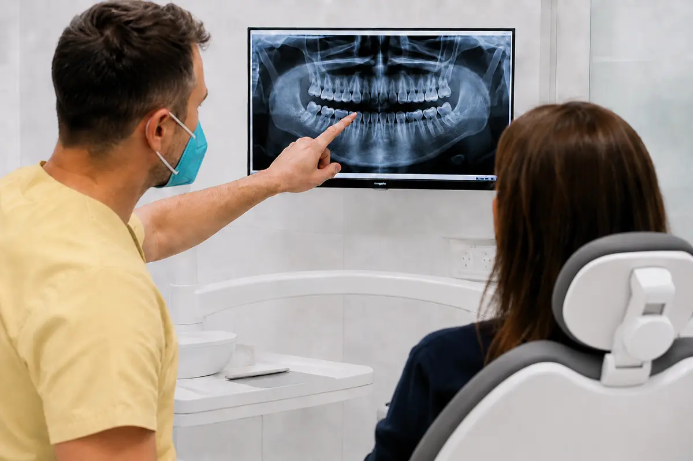
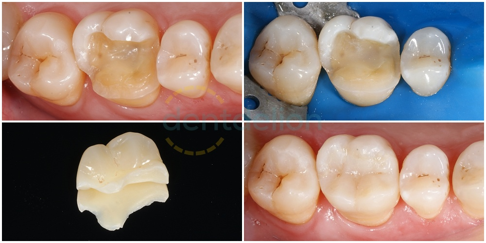

První ošetření
Odstraníme poškozenou nebo infikovanou zubní dřeň, vyhledáme kořenové kanálky a jejich systém vyčistíme, dezinfikujeme a zaplníme. Zub následně uzavřeme tak, aby mohl být bezpečně rekonstruován.
Prováděné výkony
Největší prostor věnujeme ošetření kořenových kanálků, opakovanému ošetření a endodontické mikrochirurgii. Nabízíme také cílené konzultace, druhý názor a následnou rekonstrukci zubů.

Naše hlavní specializace
Endodontické ošetření je potřeba tehdy, když je zubní dřeň nevratně zanícená nebo odumřelá, případně když se infekce rozšířila do oblasti kolem kořene. Často jde o jedinou možnost, jak postižený zub zachovat.
Cílem je odstranit infekci z kořenového systému, kanálky důkladně vyčistit, dezinfikovat a těsně zaplnit. Veškerá endodontická ošetření provádíme pod operačním mikroskopem a v izolaci koferdamem.
Odstraníme poškozenou nebo infikovanou zubní dřeň, vyhledáme kořenové kanálky a jejich systém vyčistíme, dezinfikujeme a zaplníme. Zub následně uzavřeme tak, aby mohl být bezpečně rekonstruován.
Reendodoncie přichází v úvahu, pokud předchozí ošetření nevedlo k hojení nebo se obtíže znovu objevily. Může zahrnovat odstranění původní kořenové výplně, nalezení neošetřených kanálků, odstranění zalomeného nástroje nebo opravu perforace.
Pokud infekci nelze spolehlivě řešit přes korunku zubu, může být vhodné mikrochirurgické ošetření kořenového hrotu. Pod zvětšením odstraníme zanícenou tkáň a postiženou část kořene ošetříme z chirurgického přístupu.
Přesnost a kontrola
Mikroskop poskytuje potřebné zvětšení a osvětlení při hledání jemných struktur, kontrole vyčištění i řešení komplikací. Koferdam odděluje ošetřovaný zub od dutiny ústní, omezuje přístup slin a chrání pacienta během práce s nástroji a dezinfekčními roztoky.
Tyto pomůcky nepovažujeme za nadstandard, ale za běžnou součást kvalitního endodontického ošetření.

Průběh léčby
Konkrétní postup i počet návštěv se řídí nálezem a složitostí případu.
Nemusíte být naším stálým pacientem
Potřebujete posoudit konkrétní zub, doporučené ošetření nebo možnost zub zachovat? Zaměříme se na váš konkrétní problém a nález s vámi projdeme srozumitelně a bez spěchu.
Máte-li doporučení, starší snímky nebo zprávu od svého zubního lékaře, vezměte je s sebou. Pro konzultaci u nás nemusíte měnit svého registrujícího lékaře.


Funkce a přirozený vzhled
Po odstranění kazu nebo po ošetření kořenových kanálků potřebuje zub spolehlivě obnovit tvar, pevnost a funkci. Rozsah rekonstrukce volíme podle množství zbývajících zubních tkání a zatížení konkrétního zubu.
Cílem není zub zbytečně obrousit, ale zachovat co nejvíce zdravé tkáně a současně zvolit řešení, které má v dané situaci dobrou mechanickou prognózu.
Přímou fotokompozitní výplň zhotovujeme přímo v ústech. Je vhodná pro menší a středně rozsáhlé defekty, u nichž zůstává dostatek pevných zubních tkání.
Onlay nebo overlay nahrazuje oslabenou část korunky a překrývá zatížené hrbolky. Umožňuje zachovat více vlastního zubu než klasická korunka.
Korunku volíme u výrazně oslabených zubů, pokud menší rekonstrukce neposkytne dostatečnou ochranu a stabilitu.
Objednání konzultace
Zavolejte nám nebo napište. Při objednání stručně uveďte, který zub nebo problém potřebujete řešit.
Po: 8:00–15:00
Út, St, Čt: 7:40–15:00
Pá: 8:00–10:00
Naše zdravotnické zařízení nemá smlouvy se zdravotními pojišťovnami.Další informace v ceníku.Informace o zpracování osobních údajů.